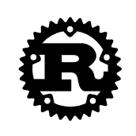

Rust チュートリアル

Rust は Mozilla が主導して開発した高性能なコンパイル型プログラミング言語で、「安全、並行、実用」という設計原則に従っています。
Rust 言語は Mozilla によって開発され、2010 年に初めて公開されました。
Rust は、関数型、並行型、手続き型、オブジェクト指向スタイルなど、さまざまなプログラミングパラダイムをサポートしています。
Rust は速度が驚異的で、メモリ利用率が非常に高いです。ランタイムやガベージコレクションがないため、特に高いパフォーマンスが要求されるサービスに対応でき、組込みデバイス上で動作し、他の言語とも簡単に統合できます。
Rust シリーズ記事の内容はSobinによって収集・整理されています。
Rust 言語の特徴
-
メモリ安全性：Rust の所有権システムはコンパイル時にダングリングポインタやデータ競合などのメモリエラーを防ぎ、ガベージコレクタを必要としません。
-
並行プログラミング：Rust は、スレッドやメッセージパッシングなど、並行プログラミングをサポートする現代的な言語機能を提供し、並行プログラムの作成をより安全かつ容易にします。
-
パフォーマンス：Rust はマシンコードにコンパイルされ、ランタイムやガベージコレクタがないため、C や C++ に近いパフォーマンスを提供できます。
-
型システム：Rust の型システムとパターンマッチングは強力な抽象化能力を提供し、より安全で予測可能なコードの記述に役立ちます。
-
エラーハンドリング：Rust のエラーハンドリングモデルは、考えられるすべてのエラー状況を明示的に処理することを推奨しています。
-
マクロシステム：Rust は強力なマクロシステムを提供し、開発者がコンパイル時にコードを記述して再利用することを可能にします。
-
パッケージ管理：Rust のパッケージマネージャ Cargo は、依存関係の管理とビルドプロセスを簡素化します。
-
クロスプラットフォーム：Rust は、Windows、macOS、Linux、BSDs など、さまざまなオペレーティングシステムとプラットフォームをサポートしています。
-
コミュニティサポート：Rust には活発なコミュニティがあり、多数のライブラリとツールが提供されています。
-
ツールチェーン：Rust は、コンパイラ、パッケージマネージャ、ドキュメント生成ツールなど、豊富なツールチェーンを備えています。
-
セグメンテーションフォールトなし：Rust の所有権とライフタイムの規則により参照の有効性が保証され、セグメンテーションフォールトを回避できます。
-
イテレータとクロージャ：Rust は強力なイテレータとクロージャをサポートし、コレクションの処理を簡素化します。
Rust の応用
Rust 言語は以下の開発に使用できます：
-
システムプログラミング：オペレーティングシステム、デバイスドライバ、組込みシステムなど。
-
ネットワークプログラミング：ネットワークサーバー、Web サービス、分散システムなど。
-
ゲーム開発：ゲームエンジン、ゲームツール、ゲームクライアントとサーバー。
-
WebAssembly：Web ブラウザで動作する高性能な Web アプリケーション。
-
ツール開発：コマンドラインツール、自動化スクリプト、システム管理ツール。
-
ブロックチェーン技術：スマートコントラクト、暗号通貨、分散型アプリケーション（DApps）。
-
科学技術計算：数値解析、データサイエンス、機械学習。
-
音声・動画処理：メディアサーバー、ストリーム処理、コーデック。
-
クラウドコンピューティング：クラウドサービスのバックエンド、コンテナ技術、マイクロサービスアーキテクチャ。
-
組込みデバイス：IoT デバイス、スマートホームデバイス、ウェアラブルデバイス。
誰がこのチュートリアルを読むべきですか？
本チュートリアルは、読者が初級のプログラミング知識をすでに習得していることを前提としています。そのため、本チュートリアルを読むには、初級のプログラミング知識がある程度必要です（できれば C/C++ または JavaScript プログラミング言語を初歩的に学んでいることが望ましいです）。
最初の Rust プログラム
Rust 言語のコードファイルの拡張子は.rs、例えばrunoob.rs。
使用してrustcコマンドで runoob.rs ファイルをコンパイルします：
$ rustc runoob.rs # 编译 runoob.rs 文件
コンパイル後に生成されるrunoob実行可能ファイル：
$ ./runoob # 执行 runoob Hello World!
参考リンク
- Rust 公式ウェブサイト：https://www.rust-lang.org/zh-CN
- Rust 公式ドキュメント：https://doc.rust-lang.org/
- Rust Play：https://play.rust-lang.org/
- Visual Studio Code：https://code.visualstudio.com/